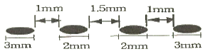
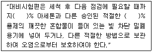
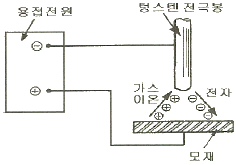
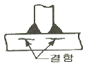

침투비파괴검사기사(구) (2012-03-04 기출문제)
1과목: 침투탐상시험원리
1. 침투탐상시험에서 침투액이 결함으로 침투되는 능력은 모세관현상과 밀접한 관계가 있다. 좁은 관을 통하여 올라가는 액체의 높이(h)에 관한 설명으로 옳은 것은?
- 액체의 표면장력이 클수록 높이 올라간다.
- 액체의 밀도가 높을수록 높이 올라간다.
- 관의 내 반경이 클수록 높이 올라간다.
- 관과 액체가 이루는 접촉각이 클수록 높이 올라간다.
(정답률: 알수없음)

2. 침투탐상시험에서 유기 및 무기오염물을 제거하기 위하여 적용하는 세척제와 세척방법이 옳은 것은?
- 트리클렌 – 증기세척
- 가성소다 – 알칼리세척
- 중크롬산소다 – 증기세척
- 염산 – 산세척
(정답률: 알수없음)
3. 침투탐상을 실시할 시험체의 표면이 아주 고온으로 가열이 되었을 경우는 어떠한 현상이 나타나는가?
- 침투액의 점성이 낮아지게 된다.
- 침투액이 급속히 불연속에 침투한다.
- 침투액의 형광특성이 낮아진다.
- 침투액은 불연속의 검출성을 높여준다.
(정답률: 알수없음)
4. 현상제를 사용한 후 이를 제거하고 다시 현상제를 뿌렸을때도 지시가 나타났다면 이때의 불연속에 대한 설명으로 옳은 것은?
- 불연속이 크며 침투액의 양이 많아서
- 미세한 불연속이기 때문에
- 대개의 경우 기공류의 불연속에서
- 대개의 경우 균열의 불연속에서
(정답률: 알수없음)
5. 작고 정교한 부품을 침투탐상시험할 때 가장 효과적인 세척방법으로 올바른 것은?
- 증기 탈지
- 산 세척
- 알칼리 세척
- 초음파 세척
(정답률: 알수없음)
6. 침투탐상시험 공정 중 대형구조물 부분검사에 가장 적합한 시험방법(용제제거성 염색침투탐상시험)의 절차로 옳은 것은?
- 전처리 → 침투처리 → 유화처리 → 세척처리 → 현상처리 → 건조처리 → 관찰 → 후처리
- 전처리 → 침투처리 → 세척처리 → 현상처리 → 관찰 → 후처리
- 전처리 → 침투처리 → 세척처리 → 유화처리 → 현상처리 → 관찰 → 후처리
- 전처리 → 침투처리 → 세척처리 → 건조처리 → 관찰 → 후처리
(정답률: 알수없음)
7. 비파괴검사법으로 볼 수 없는 것은?
- 자분탐상시험
- 인장강도시험
- 중성자투과시험
- 초음파탐상시험
(정답률: 알수없음)
8. 비자성체의 표면 및 표면직하 결함을 표면 개구 여부에 관계없이 검출하고자 할 때 가장 적합한 비파괴검사방법은?
- 자분탐상시험
- 침투탐상시험
- 음향방출시험
- 와전류탐상시험
(정답률: 알수없음)
9. 발포누설검사법(Bubble Test)의 장점이 아닌 것은?
- 큰 누설을 쉽게 찾을 수 있다.
- 누설부위의 직접 검출이 가능하다.
- 시험이 간단하며 비용이 저렴하다.
- 작은 결함에 대한 감도가 가장 우수하다.
(정답률: 알수없음)
10. 방사선투과시험의 장점과 거리가 먼 것은
- 내부결함의 검출이 가능하다.
- 물질의 큰 조성 변화 검출이 가능하다.
- 검사결과를 거의 영구적으로 기록할 수 있다.
- 방사선빔 방향에 평행한 판형결함의 검출이 용이하다.
(정답률: 알수없음)
11. 영구자석을 사용한 극간형(yoke type) 자분탐상시험법의 주된 장점으로 옳은 것은?
- 자력이 수시로 바뀐다.
- 탈자가 요구되지 않는다.
- 어떤 시험체에도 적용이 용이하다.
- 전력(electric power)이 요구되지 않는다.
(정답률: 알수없음)
12. 와전류탐상시험으로 탐상이 곤란한 것은?
- 파이프의 균열
- 재료의 전기전도도
- 박판에서 부식에 의한 두께 변화
- 자성체에서 자구(magnetic domain)의 배열 상태
(정답률: 알수없음)
13. 외경 30mm, 두께 2.5mm 의 튜브를 직경 20mm인 코일이 감겨있는 내삽형 탐촉자로 와전류탐상시험할 때 충전율(fill factor)은 얼마인가?
- 0.44
- 0.64
- 0.67
- 0.80
(정답률: 알수없음)
14. 방사선투과시험과 비교한 초음파탐상시험의 장점과 거리가 먼 것은?
- 시험체 두께에 대한 영향이 적다.
- 미세한 균열성 결함의 검사에 유리하다.
- 결함의 형태와 종류를 쉽게 알 수 있다.
- 한쪽 면에서만 접근할 수 있어도 탐상이 가능하다.
(정답률: 알수없음)
15. 침투 탐상제를 이용한 누설시험에서 일반적인 침투탐상시험과 달리 포함되지 않아도 되는 탐상 절차는?
- 전처리
- 침투처리
- 세척처리
- 현상처리
(정답률: 알수없음)
16. 나열된 코일 중에서 사용 용도가 서로 다른 한가지는?
- 관통형 코일
- 평면형 코일
- 내삽형 코일
- 직류여자 코일
(정답률: 알수없음)
17. 비파괴검사를 이상적으로 수행하기 위한 전제조건과 관계가 먼 것은?
- 검사에 소요되는 비용을 정확히 알아야 한다.
- 피검사 부위가 비파괴시험 적용이 가능해야 한다.
- 제조방법에 따른 방생가능 결함상황을 알아야 한다.
- 결함이 피검물의 성능에 미치는 영향을 알아야 한다.
(정답률: 알수없음)
18. 비파괴검사법 중 침투탐상시험만의 단점인 것은?
- 숙련이 필요하다.
- 전처리가 필요하다.
- 표면에 열려 있는 결함이어야만 검출할 수 있다.
- 표면이 거칠거나 다공성인 경우는 검사가 어려워진다.
(정답률: 알수없음)
19. 자기이력곡선(hysteresis loop)은 무엇을 나타내는가?
- 누설자속의 크기
- 강자성체의 경도
- 검사품의 자기적 특성
- 검사품의 재질과 용도
(정답률: 알수없음)
20. 초음파탐상시험에 사용되는 탐촉자의 진동자 재질 중 티탄산바륨 탐촉자의 단점으로 옳은 것은?
- 물에 녹는다.
- 내마모성이 낮다.
- 송신효율이 나쁘다.
- 화학적으로 불안정하다.
(정답률: 알수없음)
2과목: 침투탐상검사
21. 형광 침투탐상시험에서 자외선조사등의 강도에 영향을 미치는 것이 아닌 것은?
- 검사원의 손이나 옷에 묻은 침투액
- 검사원의 손이나 옷에 묻은 현상제
- 암실 내에 들어오는 외부의 불빛
- 수은등의 강도
(정답률: 알수없음)
22. 침투탐상시험에 사용하는 침투액에 함유된 유황(sulfur)이나 염소(Chlorine)는 다음 중 어느 시험체의 검사에 영향을 미치는가?
- 알루미늄 합금
- 니켈 합금
- 마그네슘 합금
- 연강
(정답률: 알수없음)
23. 침투가 잘되게 하기 위해서는 적심성이 좋아야 하는데 적심성은 접촉각으로 측정한다. 다음 중 이상적인 적심성을 갖는 접촉각은?
- 0°
- 45°
- 90°
- 180°
(정답률: 알수없음)
24. 형광 침투탐상시험에 사용되는 자외선조사등에서 발생되는 파장 중 인체에 가장 해로운 것은?
- 300nm
- 340nm
- 360nm
- 380nm
(정답률: 알수없음)
25. 침투탐상시험에서 표면 균열은 어떤 지시로 나타나는가?
- 뚜렷하고 날카롭게
- 넓고 불명확하게
- 반달 원의 모양으로
- 높고 희미하게
(정답률: 알수없음)
26. 침투탐상시험을 할 때, 전처리에 사용할 산용액을 안전하게 사용하는 방법에 대한 설명 중 잘못된 것은?
- 산세척 후에는 잔류되어 있는 것은 물로 씻어 낸다.
- 산세척 용액에 시험체를 담글 때에는 천천히 조작한다.
- 농도를 희석시킬 때에는 산에 물을 붓는다.
- 농도를 희석시킬 때에는 물에 산을 조금씩 넣는다.
(정답률: 알수없음)
27. 다음 중 침투탐상검사를 적용할 때에 고려할 사항으로 거리가 가장 먼 것은?
- 검출할 결함의 종류 및 크기
- 검사에 사용되는 장치
- 제품의 제조 형태
- 검사품의 두께와 형태
(정답률: 알수없음)
28. 침투탐상시험에서 현상면에 대한 육안검사를 하기위한 조건에 해당되지 않는 것은?
- 시험면의 밝기
- 주변부의 밝기
- 눈의 각도
- 시험면의 크기
(정답률: 알수없음)
29. 다음 중 염색침투탐상검사시 시험면의 조도로 가장 적합한 것은?
- 20Lx
- 100Lx
- 300Lx
- 500Lx
(정답률: 알수없음)
30. 소형 부품을 후유화성 형광 침투탐상시험으로 검사하는 경우 유황(sulfur)이나 염소(Chlorine)에 의해 유해할 것으로 예상되는 경우의 조치 방안으로 옳은 것은?
- 유황 및 염소 성분이 매우 적은 침투액을 사용하며, 부품에 대해서는 용제를 사용하여 후처리해 준다.
- 형광 재료를 사용해야 하며, 부품에 대해서는 청정제를 사용하여 세척해야 한다.
- 유황 및 염소 성분이 매우 적은 침투액을 사용해야하며, 부품에 대해서는 자동 청정법을 사용하여 후처리 해 준다.
- 잔류물이 쉽게 눈에 뜨이고 제거될 수 있도록 색채대비법을 사용한다.
(정답률: 알수없음)
31. 침투액의 침투속도를 증가시키기 위한 조건으로 옳은 것은?
- 온도가 낮을수록
- 밀도가 작을수록
- 표면장력이 작을수록
- 점성이 낮을수록
(정답률: 알수없음)
32. 침투탐상검사에서 세척처리 후 열풍건조에 의해 결함내부에 침투되어 있던 침투액이 시험체 표면으로 표출되어 지시모양을 형성시키는 현상법은?
- 무현상법
- 습식 현상법
- 건식 현상법
- 플라스틱 필름 현상법
(정답률: 알수없음)
33. 다음 중 세척제가 갖추어야 할 특성으로 적절하지 않은 것은?
- 산성으로 부식성이 없어야 한다.
- 휘발성이 적당해야 한다.
- 세척성이 좋아야 한다.
- 냄새가 적고, 인화점이 높아야 한다.
(정답률: 알수없음)
34. 침투탐상시험에 있어서 습식 현상제의 감도는 다음중 어떠한 경우에 심각하게 감소되는가?
- 현상제 온도가 시험체 표면온도보다 더 높은 경우
- 현상제 매우 두껍게 적용한 경우
- 부식 방지제를 현상제에 첨가된 경우
- 시험체 표면이 매끄러운 경우
(정답률: 알수없음)
35. 침투탐상검사에서 재검사 방법에 대한 설명 중 옳게 설명된 것은?
- 현상제를 제거하고 현상처리를 한 후에 다시 검사한다.
- 어떤 경우에도 재검사는 불가능하다.
- 침투처리의 조작방법에 잘못이 발견되면 다시 실시한다.
- 전처리를 포함하여 처음부터 다시 실시한다.
(정답률: 알수없음)
36. 침투탐상검사 과정 중 그 처리시간이 규정에 정해진 범위를 초과해도 큰 영향이 없는 것은?
- 침투처리
- 유화처리(수성)
- 유화처리(유성)
- 세척처리
(정답률: 알수없음)
37. 유화제에 필요한 일반적인 요건으로 틀린 것은?
- 유화 및 세척성이 좋아야 한다.
- 침투성이 낮아야 한다.
- 인화점이 낮고 중성으로 부식성이 없어야 한다.
- 후유화성 침투액과 서로 잘 녹아야 한다.
(정답률: 알수없음)
38. 침투탐상검사에서 B형 대비시험편의 종류에 해당되지 않는 것은?
- PT-B50
- PT-B40
- PT-B30
- PT-B20
(정답률: 알수없음)
39. 후유화성 침투탐상검사에서 침투액의 배액을 실시하는 가장 중요한 이유는?
- 다음 공정의 제거처리를 용이하게 하기 위해서
- 침투액을 재사용하기 위해서
- 검사 비용을 절감하기 위해서
- 검사면의 침투액을 균일하게 하기 위해서
(정답률: 알수없음)
40. 침투탐상시험 방법 중 피로균열과 같은 가장 세밀한 결함까지도 탐지할 수 있는 감도가 높은 시험방법은?
- 후유화성 형과 침투탐상시험법
- 용제 제거성 형광 침투탐상시험법
- 수세성 형광 침투탐상시험법
- 용제 제거성 염색 침투탐상시험법
(정답률: 알수없음)
3과목: 침투탐상관련규격
41. 보일러 및 압력용기에 대한 표준침투탐상검사(ASME Sec. VArt.24 SE-165)에서 친수성 유화의 유화전 헹굼 관리에 대한 설명으로 옳은 것은?
- 물의 헹굼 온도는 15~52℃ 범위 내로 관리한다.
- 분사 헹굼의 수압은 250~375kPa 의 범위로 한다.
- 세척시간은 시험체 또는 재료 규격에서 정한 시간을 따른다.
- 유화전 헹굼시간은 시험체에 침투제가 균일하게 잔류하도록 하기 위해 최대 시간으로 한다.
(정답률: 알수없음)
42. 다음 지시를 ASME Sec. Ⅷ, Div. I APP.8에 따라 판정하면 어떻게 되는가? (단, 결함지시모양은 모두 원형 지시이다.)

- 각각의 독립결함으로 간주되며 합격
- 하나의 결함으로 간주되면 합격
- 불합격
- 합격, 불합격을 판정할 수 없다.
(정답률: 알수없음)
43. 침투탐상 시험방법 및 침투지시모양의 분류(KS B 0816)에서 B형 대비시험편 PT – B30의 도금 갈라짐 나비 값으로 옳은 것은?
- 1.0 ㎛
- 1.5 ㎛
- 2.0 ㎛
- 2.5 ㎛
(정답률: 알수없음)
44. 보일러 및 압력용기에 대한 침투탐상검사(ASNE Sec.V. Art.6)에 따른 자외선조사등의 설명으로 옳은 것은?
- 자외선조사등은 사용한 후에 반드시 그 강도가 측정되어야 한다.
- 자외선조사등은 사용하기 1분전에 스위치를 넣어 작동시켜 준다.
- 자외선조사등 아래서 시험할 때는 시험에 들어가기 전에 어두움에 익숙해지도록 5분간 기다린다.
- 밝기는 시험체 표면에서 적어도 500μW/cm2 는 되어야 한다.
(정답률: 알수없음)
45. 보일러 및 압력용기에 대한 침투탐상검사(ASNE Sec.V.Art.6)에 규정된 형광 침투탐상에 대한 설명으로 틀린 것은?
- 충분히 어두운 곳에서 실시한다.
- 시험자는 최소 1분정도 암적응을 하여야 한다.
- 자외선조사등은 최소 5분 정도 예열을 시켜야 한다.
- 자외선조사등의 자외선 강도는 최소 800μW/cm2 이어야 한다.
(정답률: 알수없음)
46. 침투탐상 시험방법 및 침투지시모양의 분류(KS B 0816)에서 규정한 표준 침투시간이 5분이 아닌 시험체의 형태는?
- 동 용접부
- 마그네슘 압출품
- 알루미늄 주조품
- 티타늄 용접부
(정답률: 알수없음)
47. 침투탐상 시험방법 및 침투지시모양의 분류(KS B 0816)에서 침투지시모양과 결함의 분류에 대한 설명으로 틀린 것은?
- 침투지시모양의 분류는 의사지시가 아닌지 확인하고 나서 한다.
- 연소 침투지시 모양은 지시모양이 거의 동일 직선상에 나란히 존재하고 그 상호 거리가 3mm 이하인 것이다.
- 독립 결함은 갈라짐, 선상결함, 원형상 결함의 3종류로 분류한다.
- 분산결함은 정해진 면적 안에 존재하는 결함으로 그 종류, 개수 또는 개개의 길이의 합계 값에 따라 평가한다.
(정답률: 알수없음)
48. 침투탐상 시험방법 및 침투지시모양의 분류(KS B 0816)에 서는 결함지시모양이 거의 동일선상에 연속하여 존재하고 그 상호 간의 거리가 일정거리 이하이면 상호 간의 거리를 포함하여 연속된 하나의 지시모양으로 간주한다. 이 규격에서 정한 일정거리는 얼마인가?
- 1mm
- 2mm
- 3mm
- 4mm
(정답률: 알수없음)
49. 주강품의 침투탐상검사(KS D ISO 4987)에서 제품을 물로 헹구어 낼 때 수압은 얼마 이하이고, 수온은 얼마 미만이어야 하는가?
- 100kPa, 20℃
- 150kPa, 30℃
- 200kPa, 40℃
- 400kPa, 60℃
(정답률: 알수없음)
50. 비파괴검사-침투탐상검사-검증 수단(KS B ISO 3453)의 대비시험편에 대한 다음 설명 중 ( )안에 알맞은 숫자를 순서대로 나열한 것은?

- 20, 40
- 30, 60
- 40, 60
- 50, 50
(정답률: 알수없음)
51. 침투탐상 시험방법 및 침투지시모양의 분류(KS B 0816)의 시험 방법 분류에서 DFA-W는 어떤 시험방법인가?
- 수세성 이원성 형광 침투액 – 습식 현상법
- 후유화성 이원성 형광 침투액 – 건식 현상법
- 수세성 이원성 형광 침투액 – 건식 현상법
- 후유화성 이원성 형광 침투액 – 속건식 현상법
(정답률: 알수없음)
52. 보일러 및 압력용기에 대한 침투탐상검사(ASME Sec. VArt.6)에 규정된 과잉의 수세성 침투제를 물분무로 제거할 때 수압과 수온으로 옳은 것은?
- 수압은 30kPa, 수온은 110℃를 초과할 수 없다.
- 수압은 50kPa, 수온은 110℃를 초과할 수 없다.
- 수압은 150kPa, 수온은 43℃를 초과할 수 없다.
- 수압은 350kPa, 수온은 43℃를 초과할 수 없다.
(정답률: 알수없음)
53. 침투탐상 시험방법 및 침투지시모양의 분류(KS B 0816)의 침투탐상시험에서 결함의 분류로 올바른 것은?
- 독립 결함, 군집 결함, 분산 결함
- 연속 결함, 군집 결함, 분산 결함
- 독립 결함, 연속 결함, 분산 결함
- 선상 결함, 원형상 결함, 갈라짐 결함
(정답률: 알수없음)
54. 보일러 및 압력용기에 대한 침투탐상검사(ASME Sec.V.Art.6)에서 후유화성 침투액은 침투시간이 지나고 유화처리 전에 물 분무기를 이용하여 예비세척을 한다. 이 때 예비 세척시간은 몇 분을 초과할 수 없는가?
- 1분
- 5분
- 30분
- 60분
(정답률: 알수없음)
55. 보일러 및 압력용기에 대한 표준침투탐상검사(ASME Sec.V.Art.24 SE-165)에서 자외선등의 강도를 주기적으로 점검하도록 권고하는 주기로 옳은 것은?
- 매일
- 매주
- 매달
- 3개월 마다
(정답률: 알수없음)
56. 침투탐상 시험방법 및 침투지시모양의 분류(KS B 0816)에 의해 시험의 중간 또는 종료 후 처음부터 다시 시험을 해야 하는 경우가 아닌 것은?
- 조작 방법에 잘못이 있었을 경우
- 재시험이 필요하다고 인정되는 경우
- 보고서에 탐상제의 명칭을 잘못 기재하였을 경우
- 흠에 의한 지시인지, 의사지시인지의 판단이 곤란한 경우
(정답률: 알수없음)
57. 침투탐상 시험방법 및 침투지시모양의 분류(KS B 0816)따라 건식 또는 속건식 현상제를 사용하는 경우 현상처리전에 시험체 표면을 건조처리할 때의 건조온도는 어떻게 규정하고 있는가?
- 수분을 건조시키는 정도
- 60℃ 이하
- 90℃ 이하
- 125℃ 이하
(정답률: 알수없음)
58. 침투탐상 시험방법 및 침투지시모양의 분류(KS B 0816)에서 요구하는 시험 후 기록해야 할 사항이 아닌것은?
- 결함에 대한 종류, 길이, 개수, 위치
- 시험부위의 표면상태
- 시험시의 온도
- 시험체의 합격여부 표시방법
(정답률: 알수없음)
59. 침투탐상 시험방법 및 침투지시모양의 분류(KS B 0816)에서 FB-D의 시험방법 순서로 올바른 것은?
- 전처리 → 침투 → 유화 → 세척 → 건조 → 현상 → 관찰 → 후처리
- 전처리 → 침투 → 세척 → 건조 → 관찰 → 후처리
- 전처리 → 세척 → 침투 → 유화 → 예비세척 → 관찰 → 건조 → 후처리
- 전처리 → 건조 → 침투 → 유화 → 세척 → 후처리
(정답률: 알수없음)
60. 침투탐상 시험방법 및 침투지시모양의 분류(KS B 0816)에 의한 결함의 분류에서 독립 결함은 갈라짐 이외의 결함으로써 그 길이가 나비의 몇 배 이상인 것을 말하는가?
- 2배
- 3배
- 5배
- 7배
(정답률: 알수없음)
4과목: 금속재료학
61. Ti의 특징을 설명한 것 중 틀린 것은?
- 기계적 성질은 불순물에 의한 영향이 크다.
- 면심입방 금속이므로 소성변형하기에 적합하다.
- 응력부식 균열이 적어 화학기계나 장치에 사용된다.
- 상온부근의 물 또는 공기 중에서 부동태 피막이 형성된다.
(정답률: 알수없음)
62. Sn – Sb – Cu계 합금(babbit metel)의 주 용도는?
- 베어링용 합금
- 활자용 합금
- 땜납용 합금
- 저융점 합금
(정답률: 알수없음)
63. 비금속 개재물 검사 분류 항목 중 그룹 B형 개재물에 해당되는 것은?
- 황화물 종류
- 규산염 종류
- 단일 구형 종류
- 알루민산염 종류
(정답률: 알수없음)
64. 분말의 유동도에 영향을 미치지 않는 것은?
- 분말의 비중
- 분말의 형상
- 분말의 강도
- 분말 수분 함유량
(정답률: 알수없음)
65. 재료에 진동을 주었을 때 가장 빠르게 진동을 흡수하는 감쇠능이 가장 우수한 재료는?
- 탄소강
- 합금강
- 초경강
- 회주철
(정답률: 알수없음)
66. 다이캐스팅용 Al합금의 첨가원소 중 용탕의 유동성 및 보급성을 좋게 하고 미세 수축공을 감소시키는 원소는?
- S
- Cr
- Fe
- Si
(정답률: 알수없음)
67. 용접성 때문에 탄소당량을 낮게 하고 강도와 인성을 향상시킨 50~120kgf/mm2 급 강재는?
- 연강
- 고장력강
- 쾌삭강
- 극저탄소강
(정답률: 알수없음)
68. 구리에 함유된 불순물 중 전기 전도도에 가장 악영향을 미치는 원소는?
- Ti
- Pb
- Mn
- Au
(정답률: 알수없음)
69. 강도, 연신성, 내식성을 목적으로 사용하는 Al-Mg 합금은?
- 실루민(silumin)
- 와이 합금(Y-alloy)
- 하이드로 날륨(hydronalium)
- 로엑스 합금(Lo-Ex alloy)
(정답률: 알수없음)
70. 역학적 강화기구에 의한 이론 강도를 갖는 신소재로서 플라스틱을 소재로 개발된 유리섬유강화형 복합재료를 나타내는 것은?
- LED
- LSI
- SAP
- GFRP
(정답률: 알수없음)
71. WC 분말과 Co 분말을 압축성형하여 약 1400℃ 로 소결시키면 매우 단단한 금속이 되어 바이트와 같은 공구에 이용되는 합금은?
- 초경합금
- 고속도강
- 두랄루민
- 엘렉트론합금
(정답률: 알수없음)
72. 탄소강의 냉간 가공에 관한 설명으로 틀린 것은?
- 강을 상온가공하면 경도, 항복점, 인장강도가 증가한다.
- 스트레쳐 스트레인(stretcher strain)을 억제 하려면 20~30%의 조질 압연을 미리 실시하여야 한다.
- 냉간가공으로 생긴 잔류응력은 450℃ 이상의 가열로 급속히 감소한다.
- 전위밀도가 증가하여 강도가 커지며 경화도는 BCC보다 FCC에서 크다.
(정답률: 알수없음)
73. 표점거리 50mm, 단면적이 10mm2인 시편을 인장시험한 후 표점거리를 측정하였더니 늘어난 길이가 60mm, 단면적이 7mm2 이었다. 이 때 최대 하중이 1400kgf 이었을 때 이 재료의 인장강도와 연신율은 각각 얼마인가?
- 인장강도 : 140kgf/mm2, 연신율 : 20%
- 인장강도 : 140kgf/mm2, 연신율 : 30%
- 인장강도 : 200kgf/mm2, 연신율 : 20%
- 인장강도 : 200kgf/mm2, 연신율 : 30%
(정답률: 알수없음)
74. 스테인리스강의 분류법 중 18-8 스테인리스강의 조직으로 옳은 것은?
- 오스테나이트계이다.
- 페라이트계이다.
- 마텐자이트계이다.
- 석출경화형이다.
(정답률: 알수없음)
75. Ni – Fe 합금의 특성에 관한 설명 중 틀린 것은?
- 전계(全系)를 통한 열간가공 및 냉간가공성이 우수하다.
- 20 ~ 40% Ni 의 이상평형구역에서는 자성의 변화가 현저하게 나타난다.
- 3개의 고용체가 있으며, α상 및 δ상은 면심입방정이며, γ상은 체심압방정이다.
- 약 34% Ni 이하의 α ⇆ δ로의 변태는 가열과 냉각시에 큰 온도의 지체가 나타난다.
(정답률: 알수없음)
76. 스프링강에서 담금질성을 높이고 탄성한도를 향상시키는 원소는?
- S
- W
- Mo
- Si
(정답률: 알수없음)
77. 강의 조직 중 경도가 가장 높은 열처리 조직은?
- 페라이트
- 오스테나이트
- 마텐자이트
- 파인펄라이트
(정답률: 알수없음)
78. 탄소강에서 담금질시 화학조성 중 마텐자이트로 변태를 시작하는 온도(Ms)에 가장 크게 영향을 미치는 것은?
- C
- Si
- Mn
- Cu
(정답률: 알수없음)
79. 주철의 공정조직으로 γ + Fe3C 인 것은?
- 펄라이트(Pearlite)
- 오스몬다이트(Asmonditr)
- 레데뷰라이트(Ledeburite)
- 시멘타이트(Cementite)
(정답률: 알수없음)
80. 펄라이트 조직의 생성반응으로 옳은 것은?
- 하나의 융체로부터 두 개의 고상이 생성하는 공정반응이다.
- 하나의 고상에서 두 개의 새로운 고상이 생성하는 공석 반응이다.
- 두 개의 융체에서 새로운 고상이 생성되는 포정 반응이다.
- 두 개의 고체에서 새로운 고상이 생성되는 포석 반응이다.
(정답률: 알수없음)
5과목: 용접일반
81. 내용적 40ℓ의 산소용기에 140kgf/cm2 의 산소가 들어있다. 1시간당 350ℓ를 사용하는 토치를 쓰고 이때의 혼합비가 1 : 1의 중성화염이면 이론적으로 약 몇 시간이나 사용하겠는가?
- 16
- 20
- 32
- 46
(정답률: 알수없음)
82. 용접 홈 설계시 고려 해야할 사항으로 틀린 것은?
- 홈의 단면적은 가능한 한 크게 한다.
- 루트 반지름은 가능한 한 크게 한다.
- 루트간격의 최대치는 사용 용접봉의 지름 이하로 한다.
- 적당한 루트 간격과 루트면을 만들어 준다.
(정답률: 알수없음)
83. 불활성 가스 텅스텐 아크용접(TIG용접)에서는 교류 또는 직류가 쓰이며 직류용접에서 극성은 용접결과에 영향이 크다. 직류 정극성(DCSP)용접의 설명으로 옳은 것은?

- 전자가 전극을 향하고 가스이온이 모재표면을 넓게 충격하므로 용입이 얕다.
- 불활성 가스이온이 전극을 향하고 전자는 모재를 강하게 충격하므로 용입이 깊다.
- 불활성 가스이온이 모재 표면에 충돌하여 샌드 블라스트(sand blast)한 것과 같이 산화물을 제거한다.
- 불활성 가스이온이 모재 표면에 충돌하여 용입이 얕다.
(정답률: 알수없음)
84. 용접변형을 적게 할 목적으로 용접하는 방법 설명으로 틀린 것은?
- 역변형을 주어 용접한다.
- 용접속도를 가능한 느리게 한다.
- 구속지그를 억제법으로 용접한다.
- 대칭법, 스킵법 등 적절한 용접순서를 택한다.
(정답률: 알수없음)
85. 다음 중 용접의 장점으로 보기 어려운 것은?
- 기밀, 수밀, 유밀성이 우수하며, 이음효율이 높다.
- 제품 성능과 수명이 향상되며, 이종재료도 접합할 수 있다.
- 보수와 수리가 용이하며, 복잡한 구조물 제작이 쉽다.
- 품질검사가 비교적 쉬우며, 변형과 수축 조절이 용이하다.
(정답률: 알수없음)
86. 가스용접에서 전진법(forward hand method)과 비교한 후진법(back hand method)의 특징에 대한 설명으로 틀린 것은?
- 두꺼운 판의 용접에 적합하다.
- 용접 변형이 크다.
- 용접 속도가 빠르다.
- 용착금속의 조직이 미세하다.
(정답률: 알수없음)
87. 다음 그림에서와 같이 모서리 이음, T이음 등에서 볼 수 있는 결함으로 강의 내부에 모재 표면과 평행하게 층상으로 발생하는 결함은?

- 라멜라 테어(lamella tear)
- 토 균열(toe crack)
- 크레이터 균열(crater crack)
- 루트 균열(root crack)
(정답률: 알수없음)
88. 수소가스 분위기 속에 있는 2개의 텅스텐 전극봉 사이에서 아크를 발생시키면 수소는 열 해리되어 분자 상태에서 원자 상태로 되며, 모재 표면에서 냉각되어 다시 분자 상태로 될 때 방출되는 열(3000~4000℃)을 이용하여 용접하는 방법은?
- 불활성가스 텅스텐 아크용접(inert gas tugsten arc welding)
- 원자수소 아크용접(atomic hydrogen arc welding)
- 오토콘 용접(autocon welding)
- 전자 빔 용접(electron beam welding)
(정답률: 알수없음)
89. 신규 충전된 용해 아세틸렌 용기 전체 무게가 45kgf 이고 사용 후의 공병의 무게가 40kgf이였다면 1kgf/cm2, 15℃에서 충전된 아세틸렌 가스의 양은 약 몇 L 정도인가?
- 1800L
- 3600L
- 4525L
- 7000L
(정답률: 알수없음)
90. 미국 용접 협회(AWS) 자격 규정에서 평판용접 3G의 용접자세는?
- 아래보기 자세
- 수직 자세
- 수평 자세
- 위보기 자세
(정답률: 알수없음)
91. 용접부의 비파괴 시험법에 해당되지 않는 것은?
- 부식시험
- 침투시험
- 누설시험
- 음향시험
(정답률: 알수없음)
92. 스터드 용접(stud welding)에서 페룰(ferrule)의 역할로 틀린 것은?
- 용접이 진행되는 동안 아크열을 집중시켜 준다.
- 용융금속의 산화를 촉진시켜 준다.
- 용융금속의 유출을 막아 준다.
- 용접사의 눈을 아크광선으로부터 보호해 준다.
(정답률: 알수없음)
93. 탄산가스 아크용접의 특징을 설명한 것 중 틀린 것은?
- 전류밀도가 높아 용입이 깊고 용접속도를 빠르게 할수 있다.
- 용착금속의 기계적 성질 및 금속학적 성질이 좋다.
- 전자세 용접이 가능하나, 박판의 용접에는 곤란하다.
- 가시아크이므로 시공이 편리하다.
(정답률: 알수없음)
94. 불활성 가스 금속 아크 용접(MIG)의 특징 설명으로 틀린 것은?
- 수동 피복 아크 용접에 비해 용착효율이 높아 용접속도를 높일 수 있다.
- 바람의 영향을 받기 쉬우므로 방풍대책이 필요하다.
- 후판 및 박판(3mm 이하) 용접에도 적합하다.
- TIG 용접에 비해 전류밀도가 높고 용융속도가 빠르다.
(정답률: 알수없음)
95. 플래시 버트(Flash-butt)용접의 특징을 설명한 것이다. 틀린 것은?
- 가열부의 열영향부가 좁다.
- 용접면에 산화물의 개입이 적다.
- 용접 시간이 짧고 업셋용접보다 소비전력이 적다.
- 종류가 다른 금속의 용접은 불가능하다.
(정답률: 알수없음)
96. 두께가 20 mm인 연강판을 서브머지드 아크 용접기로 용접후, 방사선비파괴검사를 한 결과 용접부에 균열(crack)이 발견 되었는데, 균열의 원인과 대책으로 틀린것은?
- 원인 : 용접부의 급랭으로 인한 열영향부의 경화, 대책 : 전류와 전압은 높게, 용접속도는 느리게 한다.
- 원인 : 용접순서 부적당에 의한 응력집중 발생, 대책 : 적당한 용접설계를 한다.
- 원인 : 다층 용접의 제 1 층에 생긴 균열 및 비드가 수축 변형에 견디지 못할 때, 대책 : 제 1 층 비드를 작게 한다.
- 원인 : 구속이 심할 때, 대책 : 낮은 전류로 용접한다.
(정답률: 알수없음)
97. 티그 용접기 토치부품에서 가스 노즐(nozzle)의 재질은 다음 중 어느 것이 가장 적합한가?
- 세라믹(ceramic)
- 연강
- 텅스텐(tungstem)
- 고합금강
(정답률: 알수없음)
98. 피복 아크 용접시 비드 표면과 모재와의 경계부에 발생하는 용접 균열은?
- 루트 균열(root crack)
- 크레이터 균열(crater crack)
- 토우 균열(toe crack)
- 비드 밑 균열(under bead crack)
(정답률: 알수없음)
99. 용접부에 발생한 결함 중 주로 내부결함을 검출하기에 가장 적합한 검사방법은?
- 육안검사
- 초음파검사
- 현미경 조직검사
- 부식검사
(정답률: 알수없음)
100. 탭 작업, 구멍 뚫기 등이 필요없이 모재에 볼트나 환봉등을 아크열을 이용하여 자동적으로 단시간에 용접부를 가열 용융하여 용접하는 방법은?
- 일렉트로 슬래그 용접법
- 테르밋 용접법
- 스터드 용접법
- 원자 수소 용접법
(정답률: 알수없음)